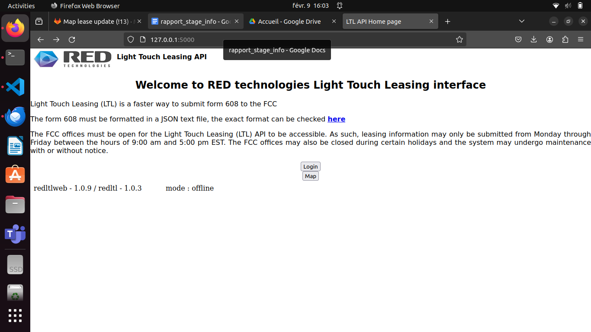

Stage de 5 semaines chez redTechnologies

Collaborateurs :
thomas hervierSidhveer Malli
Mission :
Créer une marketplace pour la location de pal,le but est d’afficher les counties ( compté ) sur une map google via l’api javascript de google maps, puis de lister l’ensemble des pals dans un menu à droite, via ce menu on peut voir les pal avec des leases et si une leases est présente on peut cliquer sur un bouton gris et un cela se concentre sur un fenêtre spécifique avec les leases déjà présente et une info-bulle apparaît quand on passe la souris dessus.Entrepise :
Fondée en 2012, RED Technologies a été un pionnier dans les technologies de partage de spectre et a activement contribué au développement réglementaire et normalisé de la bande CBRS (Citizens Broadband Radio Service). RED Technologies est désormais un fournisseur leader de technologies de pointe et de services, proposant des solutions de partage de spectre CBRS et TVWS (Télévision White Space) évolutives et basées sur le cloud, adaptées aux opérateurs de toutes tailles et de tous secteurs. La solution CBRS de RED est déployée aux États-Unis en partenariat avec Amdocs.
Mission
Page principale de ma mission comprenant un bouton pour dessiner, un bouton pour zoomer et dézoomer, une barre de recherche qui n'était pas fonctionnelle en raison du coût qu'elle engendrait, et un bouton pour changer la vue.
En zommant sur la page, les county ( compté ) se charge grâce à la base de donnée qui à été rempli par un fichier geojson
L'orsque l'utilisateur dessine un polygone, il regarde tous les conties ( compté ) qui se retrouve à l'intérieur de lui et les listes dans un menu a droite.
Quand on clique sur un counties, celui-ci est centré et ces contours deviennent bleus, un menu a droite aparaît avac l'ensemble des locations presentent dans la zone.
Le bouton à tout a droite peut etre bleu si aucune location n'est déjà prise ou gris si une location est partiellement ou complètement prise.

Exemple d'un pal selectionner avec une plage déjà allouer
exemple de vue différente